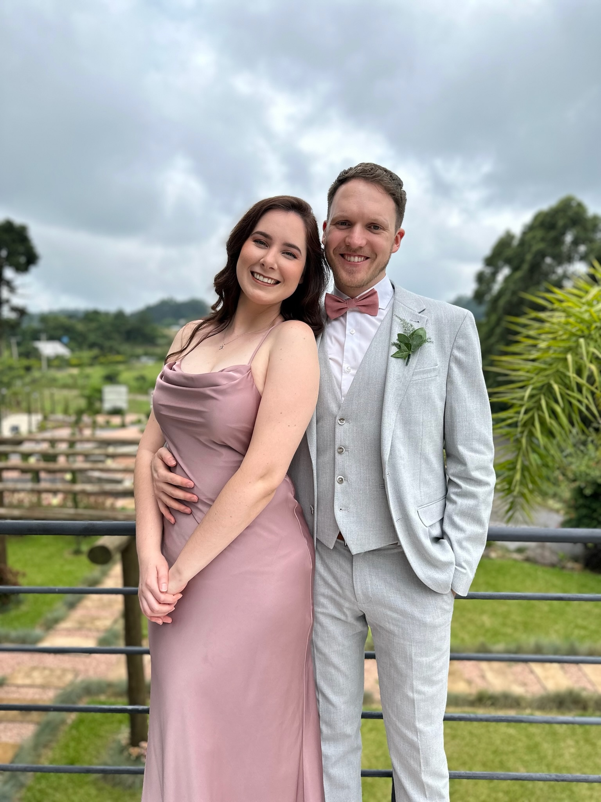
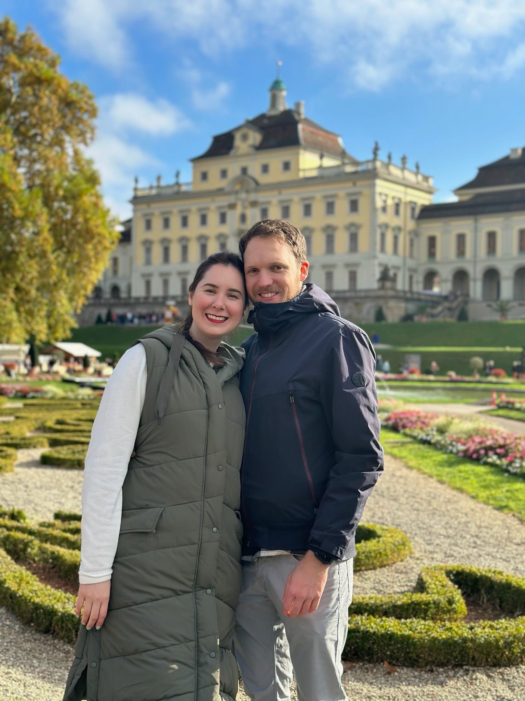
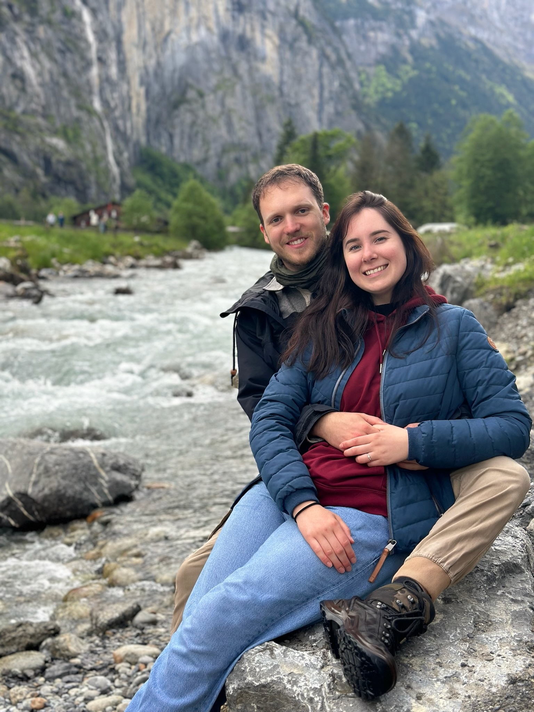
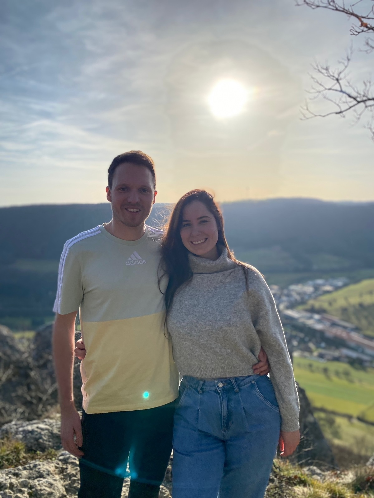
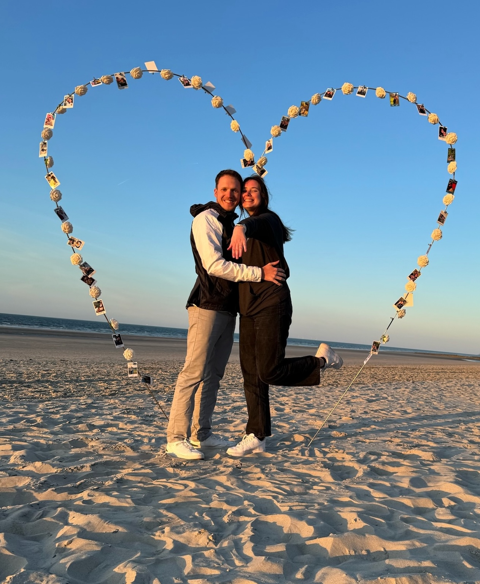
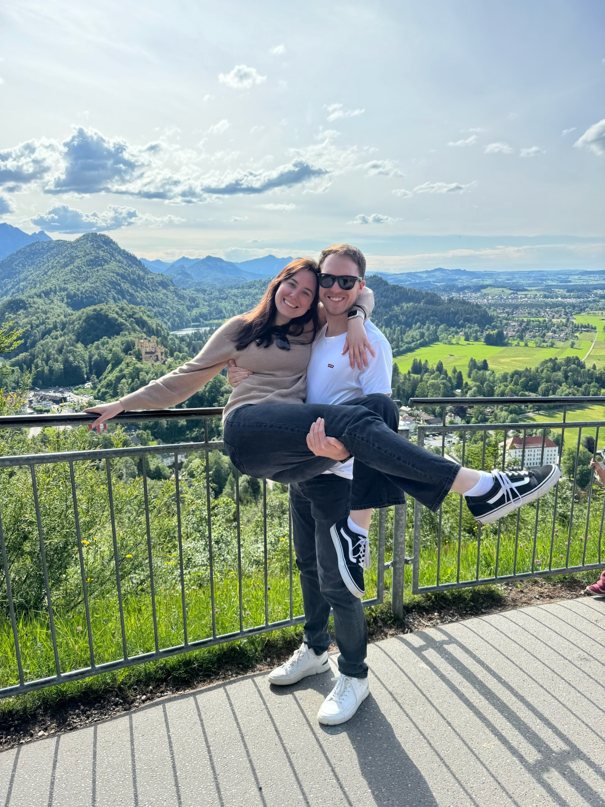
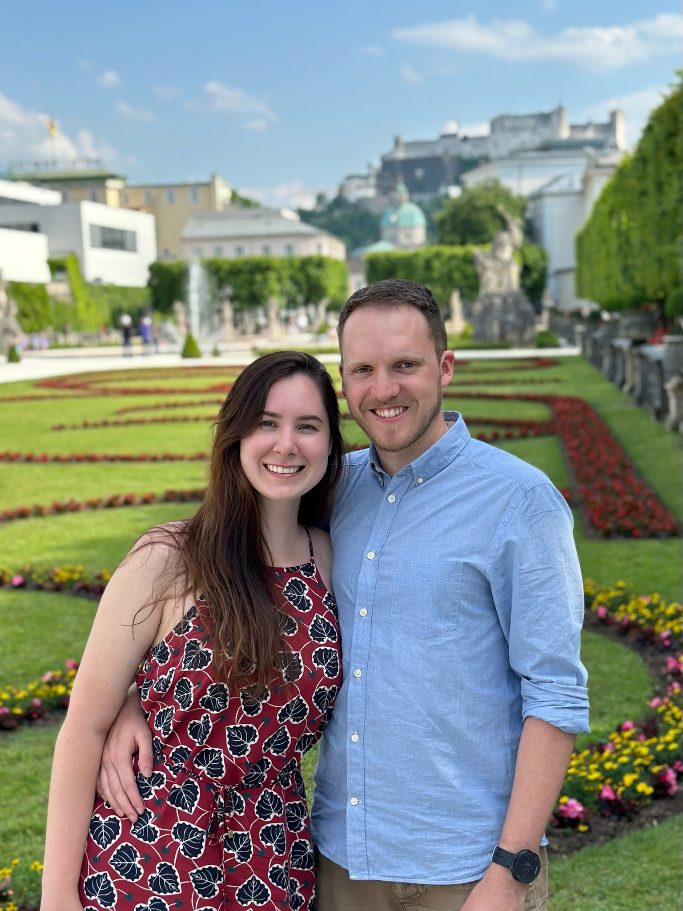
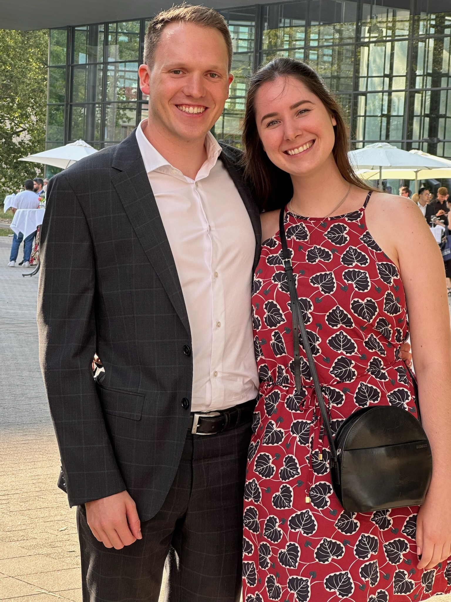
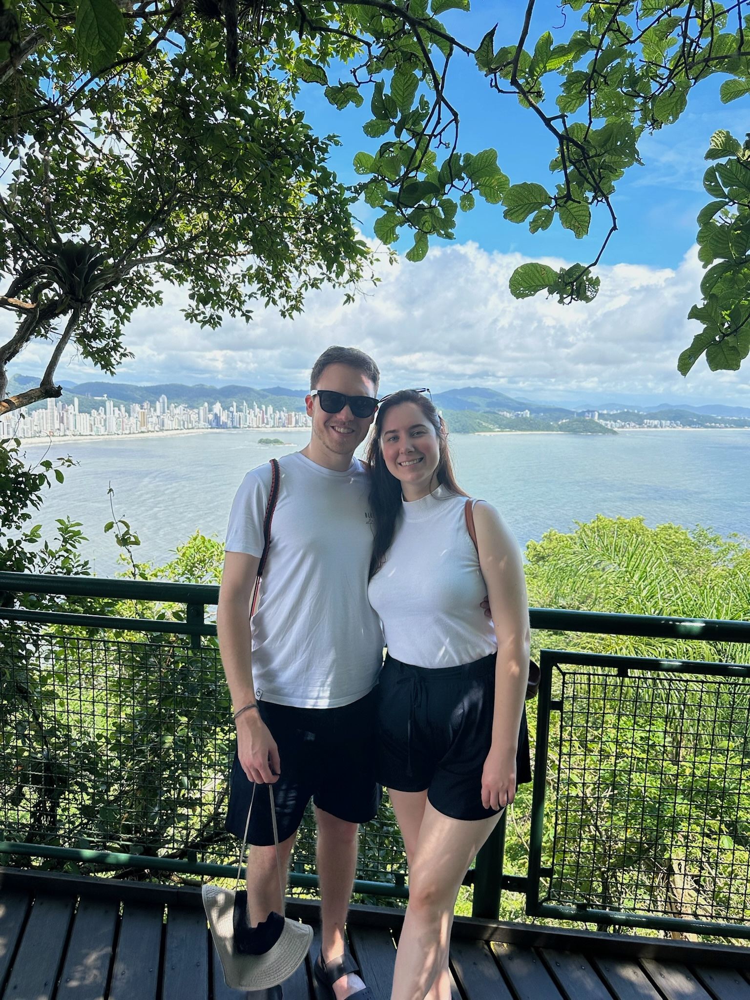
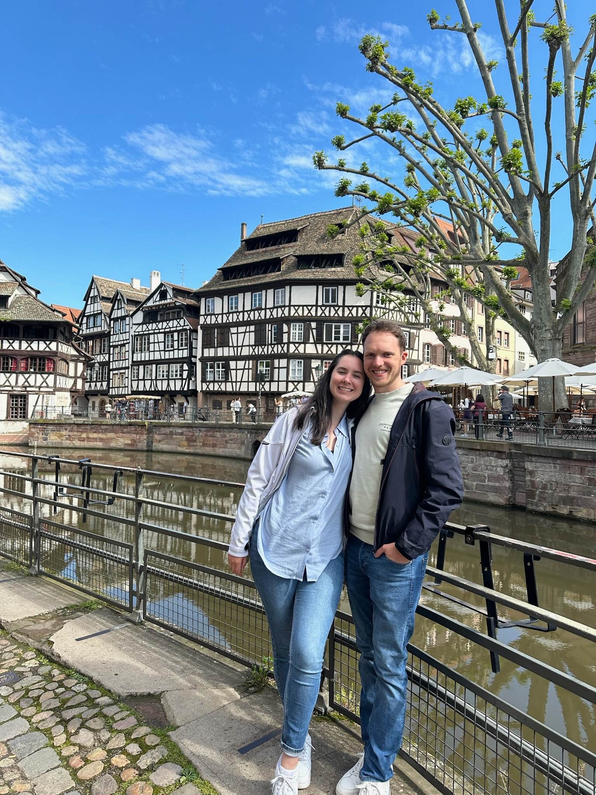

Wir freuen uns, diesen besonderen Tag mit euch zu teilen!
Estamos muito felizes em compartilhar este dia especial com você!










Wir wollen euch gerne unsere Kennenlerngeschichte erzählen. Hier auf Deutsch möchte ich, Sebastian, die Geschichte aus meiner Perspektive erzählen. Auf portugiesisch könnt ihr alles aus den Augen von Larissa lesen.
Alles begann während meiner Masterarbeit Ende 2022, als ich einen Sabbat ein neues Mädchen mit hübschen Lächeln im Gottesdienst entdeckt habe. Der übliche Smalltalk hat sie direkt noch interessanter gemacht, kommt aus Brasilien, Juristin, Studentmissionary. Als sie beim nächsten mal etwas später in meine Bibelgesprächsgruppe kam, konnte ich mir ein Grinsen nicht verkneifen. Zum Glück gab es direkt am selben Abend die Late-Night-Shopping Aktion in Stuttgart und ich konnte sie zu einem ersten Date einladen. Das es ein Date war, haben wir uns aber erst ein paar Wochen später eingestanden. Man kann sich erstaunlich gut kennenlernen wenn man gemeinsam durch SportScheck, Depot und co schlendert. Ich behaupte mal ich war den ganzen Abend entspannt, aber als Larissa mir dann beim Mexikaner gegenüber saß wurde ich doch ein bisschen nervös. So ein hübsches Mädchen und sie unterhält sich mit mir. Sitze ich gut? Wie sehen meine Haare aus? Oh nein, ich habe gerade das Projekt Bart gestartet und das sieht alles andere als gepflegt aus… Da reflektiert man sich plötzlich ganz anders. Einziges Problem, ihr Handy war kaputt und ich hab deshalb nicht nach ihrer Nummer gefragt. Mir ist aber erst Zuhause aufgefallen, dass ich gar keine Möglichkeit habe sie anzuschreiben. Zum Glück habe ich mich dann erinnert wo sie arbeitet und tatsächlich konnte ich ihre Emailadresse auf deren Webseite finden. Problem gelöst.
Die folgenden Emails und Nachrichten führten schnell zu einem zweiten, dritten und vierten Date. Egal ob wir auf dem Weihnachtsmarkt, shoppen, Riesenrad fahren oder im Kino waren, ich habe mich immer sehr gefreut sie zu sehen und unsere gemeinsame Zeit genossen. Bis vielleicht auf das eine Mal, als wir ein WM Spiel geschaut haben und Brasilien gegen Kroatien verloren hat. Aber das Date war sowieso zum vergessen. Verschiedene Gründe, dürft ihr Larissa fragen.
Man wirft mir manchmal vor, ich denke zu viel und vor allem zu lange. Habe ich in diesem Fall nicht gemacht! Nach einem Monat kennenlernen war mir klar, die passt zu mir und ich habe sie gefragt ob sie meine Freundin sein möchte. Mir hat ihre Antwort sehr gut gefallen. Obwohl ich vieles noch nicht über Larissa wusste, habe ich kein Tag bereut, sie am 17. Dezember 2022 gefragt zu haben, ob sie meine Freundin sein möchte. Das schöne ist, dass all die Dinge die ich über sie seitdem herausgefunden habe, angenehme Überraschungen waren. Habe mich auf jeden Fall gut entschieden.
Seit dem haben wir viele Unternehmungen und Reisen gemeinsam bestritten. Egal ob anstrengende Reisen, weil wir aufgrund eines Streiks, ein 1,5h Flug gegen eine 8h Flixbusfahrt eintauschen mussten, oder schöne Urlaube am Strand von Brasilien. Mit Larissa macht alles mehr Spaß. Auf einer der Reisen durch Europa, durfte ich auch ihre liebe Familie kennenlernen. Danke das ihr mich so gut aufgenommen habt!
An dieser Stelle möchte ich mich bei meiner Schwiegermutter entschuldigen: „Entschuldigung Leticia, dass du so lange warten musstest!“. Als wir über den Jahreswechsel 23/24 in Brasilien waren, habe ich um Larissas Hand angehalten und ihren Eltern verkündet das ich die Verlobung für die nächsten Monate plane. Es ist jedoch nicht so einfach eine perfekte Verlobung zu planen, weshalb es dann fast ein halbes Jahr gedauert hat, bis ich endlich am 11.05.24 auf mein Knie gegangen bin und Larissa gefragt habe ob sie meine Frau werden möchte. Wie ihr alle wisst, hat sie zu meinem Glück JA gesagt!
Das schönste an der Verlobung war, dass ich endlich keine geheimen Sachen mehr alleine planen muss. Ab jetzt mit Larissa zusammen, ist einfacher, funktioniert besser und macht mehr Spaß!
As histórias são contadas a partir da perspectiva de cada observador. Nós nos conhecemos, nos apaixonamos e queremos compartilhar um pouquinho do começo dessa história com vocês. O texto em alemão foi escrito pelo Sebastian e o texto em português, pela Larissa. Cada um com a sua perspectiva de como tudo começou.
Mudar de país, uma loucura por si só. Mas foi isso que eu fiz em dezembro de 2021. Deixei meu amado Brasil pra trás, pessoas especiais, um gato, um emprego, a tão famosa "zona de conforto" pra viver o novo na Austria! Em agosto de 2022 mudei mais uma vez de país - Alemanha - onde quase tudo era desconhecido. Trabalho novo, casa nova, novos colegas de trabalho, nova língua. Eu estava literalmente tendo que aprender a viver de novo.
Acordei sem muita vontade de ir na igreja naquele sábado de manha e o clima de outono não era muito convidativo, mas eu queria encontrar pessoas, conversar com gente diferente, talvez fazer novas amizades. Quando entrei na igreja em Stuttgart, no dia 29 de outubro de 2022 vi um rosto novo. Sentei na ponta de uma fileira quando senti um leve toque nas costas. Era o "menino novo" me convidando pra sentar do seu lado, pra eu não ficar sozinha. Descobri naquele dia que ele se chamava Sebastian. Um menino não tímido, mas que também não falava muito de si. Muito simpático, mas reservado. Exalava calmaria e seu sorriso me fazia sorrir também.
No sábado seguinte ele estava lá de novo!! Conversamos de novo e concordamos de ambos voltar para a programação da tarde. Eu fui pontual, ele chegou nos últimos 10 min. Decidimos dar uma volta na cidade, passar mais tempo juntos e fomos jantar num restaurante mexicano para comemorar meu aniversário que tinha sido no dia anterior. Nesse dia descobrimos que tínhamos muito em comum! A conversa fluía, não teve "silencio constrangedor" e aquele não parecia apenas nosso segundo encontro.
Depois disso veio o silencio. Eu não tinha seu numero de telefone e ele não estava la nos próximos sábados. Até que veio, por E-Mail um pedido por meu número! Tivemos mais um date, e depois mais um e entre várias mensagens, andar roda gigante, fazer guerrinha de neve (bem de filme mesmo), ver o Brasil perder pra Croácia nos minutos finais (dói só de pensar), andar pela feirinha de natal e horas de ligações, eu fui tendo um sentimento novo. Já tinha me apaixonado antes, mas não assim. Dessa vez era um sentimento tranquilo, que trazia segurança.
Tive que cancelar nosso encontro meio que em cima da hora porque fiquei doente e fui dormir. Acordei no dia seguinte com a campainha tocando. Era Sebastian com cobertor, chá e uma flor. Eu, sem saber direito o que estava acontecendo agradeci e voltei pro quarto dormir! Depois de algumas horas acordei me sentindo melhor e ele estava do meu lado, sentado, lendo um livro. Conversamos, cozinhamos juntos, fizemos até uma caminhada a uma agradável temperatura de 1 grau. No fim do dia nós estava sentados no sofá, observando a neve que caia la fora, quando Sebastian, com a voz um tanto tremula, me pergunta se eu queria ser a sua namorada e minha resposta não dava margem para dúvidas. Apartir do dia 17 de dezembro de 2022 começou, oficialmente, nossa história. Um novo capitulo.
Depois veio o Capitulo do Noivado e no dia 27 de abril de 2025 vai começar mais um novo capitulo. O "novo" mais esperado. O "novo" que eu tanto sonhei.
Die Hochzeit findet am 27.04.2025 in Baden-Baden statt. Wir werden auf der wunderschönen Location von Kitchen and Soul feiern, das kleine Anwesen liegt etwas abgelegen hinter Baden-Baden von Wald und Weinbergen umgeben. Es gibt genügend Parkplätze und auch Raum zum Rückzug, sowie ein extra für Kinder ausgestatteter Spieleraum. Die Trauung wird im angrenzenden Garten stattfinden. Für eine Schlechtwetter Alternative ist gesorgt.
Adresse: Eckhöfe 12, 76534 Baden-Baden.
Schaut am besten kurz vor der Hochzeit nochmal vorbei. Änderungen vorbehalten.
Wenn du gerne etwas zum Hochzeitsprogramm beitragen möchtest, kontaktiere bitte Sebastians Tante Bella, unter bella.cabrera90@gmail.com
Es erwartet uns ein leckeres vegetarisches Buffet mit verschiedenen Optionen. Falls du spezielle Ernährungsbedürfnisse hast, lass es uns gerne wissen.
Wir freuen uns über jegliches Geschenk, besonders über das Geschenk eurer Anwesenheit 😊
Wenn ihr etwas schenken wollt, vertrauen wir voll und ganz auf euren Geschmack oder nehmen auch gerne etwas für unsere Flitterwochenkasse.
O casamento acontecerá em 27.04.2025 em Baden-Baden. Vamos celebrar no maravilhoso espaço Kitchen and Soul, uma propriedade cercada por florestas e vinhedos. Há estacionamento suficiente e espaço para descanso, bem como um espaço especialmente para as crianças. A cerimônia será no jardim adjacente, com uma alternativa em caso de mau tempo.
Endereço: Eckhöfe 12, 76534 Baden-Baden.
Visite o site pouco antes do casamento. Programa sujeito a alterações.
Se você tiver ideias de brincadeiras para a festa de casamento ou quiser participar fazendo algum outro tipo de apresentação (música, fotos, etc.) mande um E-Mail para a tia do Sebastian, Bella - bella.cabrera90@gmail.com (tradição alemã).
Teremos um delicioso buffet vegetariano com várias opções. Caso tenha necessidades dietéticas específicas, avise-nos.
Ficaremos felizes com qualquer presente, especialmente a sua presença 😊
Se quiserem nos presentear com algo, confiamos plenamente no vosso gosto ou teremos o prazer em aceitar um donativo para o nosso fundo de lua de mel.
Bitte bis zum 28.02.2025 eure Teilnahme bestätigen.
Confirme a sua participação até 28 de fevereiro de 2025.